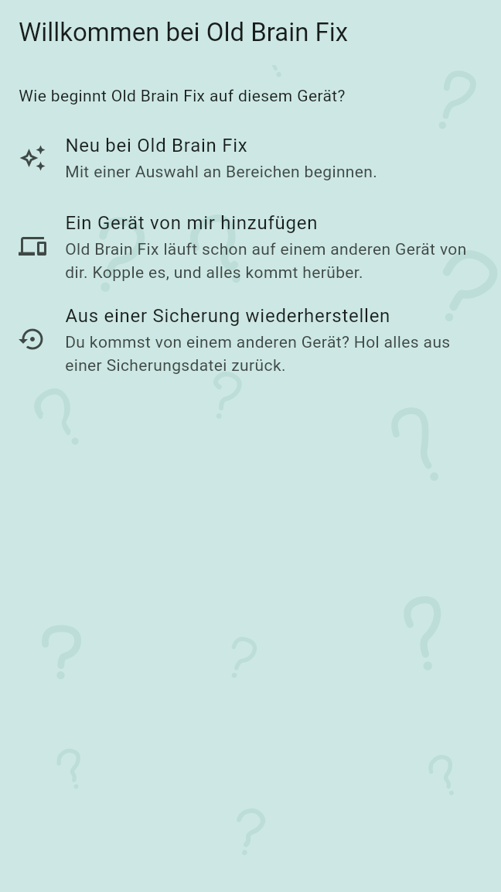
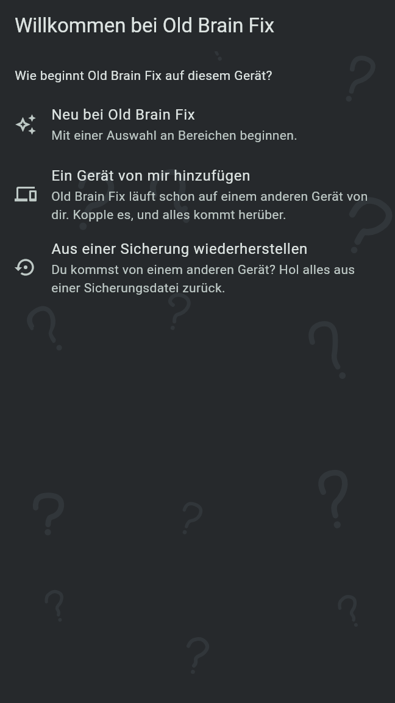
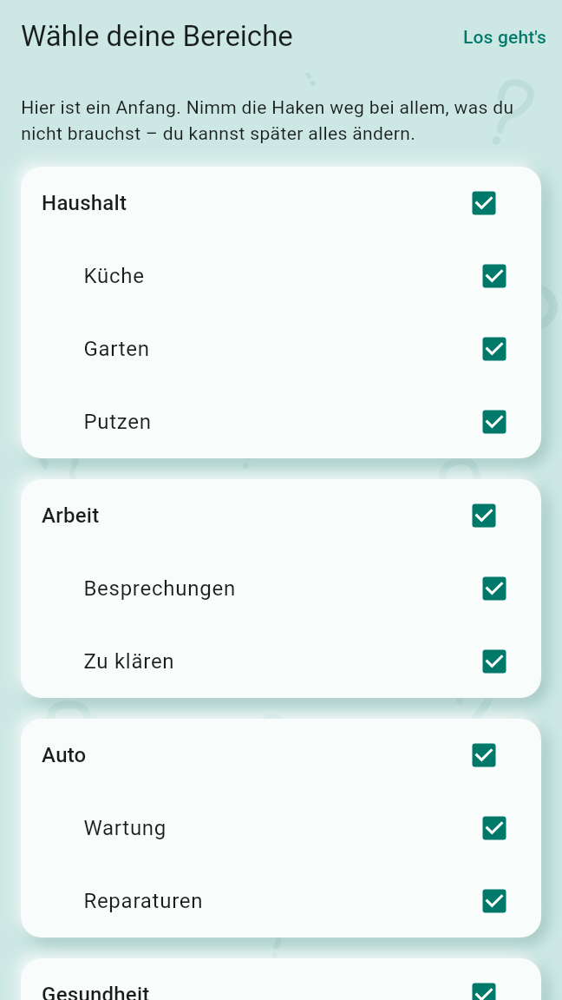
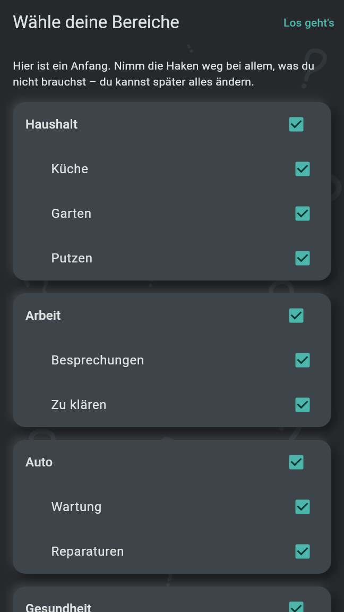

Beim ersten Start fragt Old Brain Fix, wie es auf diesem Gerät beginnt: neu, als weiteres Gerät von dir oder aus einer Sicherung. Danach bietet das Handy das Sprachmodell an und geht die Rechte durch, die Alarme brauchen; dann öffnet sich die Agenda.
Der erste Bildschirm, „Willkommen bei Old Brain Fix“, fragt „Wie beginnt Old Brain Fix auf diesem Gerät?“ und bietet drei Zeilen. Jede Zeile ist eine Aktion; ein Tipp darauf geht sofort weiter.


„Wähle deine Bereiche“ zeigt die Startauswahl, jeder Bereich und jedes Thema mit Haken:
Nimm die Haken weg bei allem, was du nicht brauchst. Ein Thema bleibt nur mit seinem Bereich: Den Haken eines Bereichs wegzunehmen nimmt auch die seiner Themen weg, und ein Thema abzuhaken hakt seinen Bereich wieder ab. Los geht's behält, was abgehakt ist. Zurück führt zu den drei Wahlmöglichkeiten. Bereiche und Themen lassen sich später im Notizbrowser umbenennen, hinzufügen und löschen.
Dein Profil entsteht aus dem Namen des Geräts. Name und Bild änderst du auf der Profilseite, hinter dem Profilbild in der oberen Ecke der Agenda.


Damit koppelst du das neue Gerät mit einem, auf dem Old Brain Fix schon läuft. Die beiden Geräte koppeln in beide Richtungen:
Sobald ein Abgleich durchging, hat das neue Gerät dein Profil, deine Bereiche und deine Notizen. Die Startauswahl wird nicht angeboten, und das Profil ist das deines anderen Geräts. Ein fehlgeschlagener Abgleich, ein abgewiesenes Gerät oder Zurück führen zu den drei Wahlmöglichkeiten.
Wähle die Sicherungsdatei, öffne sie mit ihrer Passphrase oder mit dem Wiederherstellungsschlüssel vom Wiederherstellungsblatt, eingetippt oder vom Blatt gescannt, und tippe Wiederherstellen. Eine Sicherung kommt nur auf ein Gerät, das noch keine Notizen enthält. Die Startauswahl wird danach nicht angeboten: Die Bereiche kommen mit der Sicherung.
Einstellungen sind nicht in einer Sicherung. Stell nach dem Wiederherstellen Alarme und Sperren neu ein, wähle den Sicherungsordner noch einmal und kopple deine anderen Geräte noch einmal.
Hat Androids eigene Datensicherung mit der App eine Sicherung aus deinem Google-Konto zurückgebracht, öffnet der erste Start sie sofort („Eine Sicherung ist zurück“) und fragt nach der Passphrase oder dem Wiederherstellungsschlüssel. Ohne sie anfangen lässt sie liegen und führt zu den drei Wahlmöglichkeiten.
Nach der Startauswahl, einer Wiederherstellung oder einem hinzugefügten Gerät fragt das Handy „Sprachnotizen auf dem Telefon transkribieren?“. Das Sprachmodell macht aus Sprachaufnahmen ein Transkript, das du lesen und durchsuchen kannst; es wird einmal (148 MB) aus der eigenen Veröffentlichung von Old Brain Fix auf GitHub heruntergeladen und läuft auf dem Handy.
Mit mobilen Daten sagt der Bildschirm, wie viel davon der Download verbraucht. Das Angebot kommt nur einmal und nur, wo das Sprachmodell laufen kann und noch keines da ist. Unter Einstellungen, Sprachmodell gibt es es jederzeit später, mit der Wahl zwischen dem Basis- und dem kleinen Modell oder einer eigenen Datei. Die Aufnahmen bleiben in jedem Fall.
Zuletzt geht „Alarme einrichten“ Schritt für Schritt die Rechte durch, die Routinen und Erinnerungen brauchen: Benachrichtigungen, Alarme auf die Minute und Vollbild-Alarme. Erlauben öffnet die Frage oder Seite des Systems; Weiter geht weiter, auch ohne. Solange eines fehlt, steht ein rotes Banner auf der Agenda, das zurück zur Einrichtung führt.
Beim ersten Erfassen einer Notiz fragt die App einmal, ob sie festhalten darf, wo du warst („Merken, wo du warst?“). Das Erfassen selbst fragt nie etwas.
Der erste Start der Desktop-App zeigt dieselben drei Wahlmöglichkeiten, jede ein Knopf unter ihrer Erklärung.
Der Desktop fragt beim ersten Start weder nach dem Sprachmodell noch nach Rechten für Alarme. Das Sprachmodell lädst du unter Einstellungen, Sprachmodell herunter.